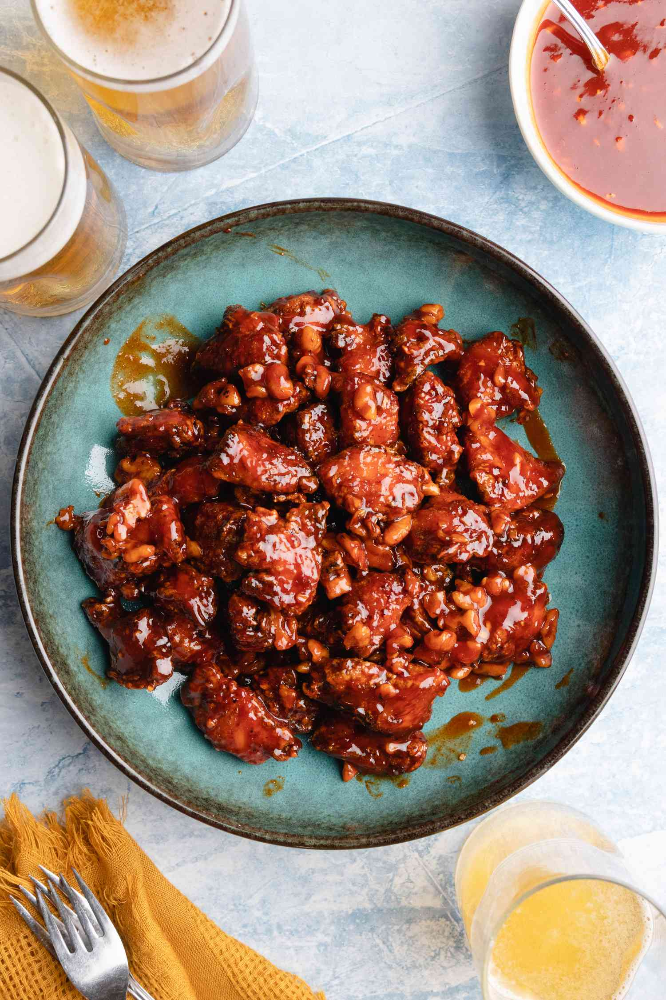

Un plat coréen composé de morceaux de poulet frits enrobés d'une sauce sucrée, épicée et collante. Souvent servi en apéritif ou en plat principal, il est apprécié pour son mélange harmonieux de textures croustillantes et de saveurs riches.
Recette

Ingrédients
Dakgangjeong est un plat coréen de poulet frit en sauce sucrée et épicée. Voici les ingrédients typiques pour préparer Dakgangjeong :
Pour le poulet :
500 g de morceaux de poulet (cuisses ou ailes désossées)
1 cuillère à café de sel
1 cuillère à café de poivre
2 cuillères à soupe de vin de riz (ou de vin blanc sec)
1 cuillère à soupe de gingembre râpé
Pour la pâte à frire :
1/2 tasse de farine de blé
1/2 tasse de fécule de maïs (ou fécule de pomme de terre)
1 œuf
1/2 tasse d'eau froide
Pour la sauce :
2 cuillères à soupe de sauce soja
2 cuillères à soupe de gochujang (pâte de piment coréenne)
2 cuillères à soupe de sirop de maïs (ou miel)
2 cuillères à soupe de sucre
2 cuillères à soupe de vinaigre de riz
1 cuillère à soupe de ketchup
2 gousses d'ail hachées
1 cuillère à café de graines de sésame
1 cuillère à soupe d'huile de sésame
Pour la garniture :
Graines de sésame grillées
Cacahuètes ou noix hachées (facultatif)
Préparation
Étapes de la préparation
Commencez par mariner le poulet avec le sel, le poivre, le vin de riz et le gingembre râpé. Laissez reposer pendant au moins 30 minutes.
Préparez la pâte à frire en mélangeant la farine de blé, la fécule de maïs, l'œuf et l'eau froide jusqu'à obtenir une texture lisse.
Chauffez l'huile dans une casserole ou une friteuse à 180°C.
Pendant que l'huile chauffe, trempez chaque morceau de poulet mariné dans la pâte à frire, puis faites-les frire jusqu'à ce qu'ils soient dorés et croustillants.
Pendant que le poulet cuit, préparez la sauce en mélangeant la sauce soja, le gochujang, le sirop de maïs, le sucre, le vinaigre de riz, le ketchup, l'ail, les graines de sésame et l'huile de sésame dans une casserole à feu doux. Laissez mijoter jusqu'à épaississement.
Une fois le poulet frit, mélangez-le délicatement avec la sauce jusqu'à ce qu'il soit bien enrobé.
Servez le Dakgangjeong saupoudré de graines de sésame grillées et éventuellement de cacahuètes ou de noix hachées.